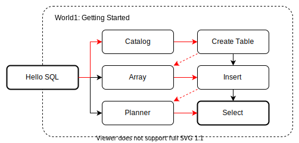

入门
欢迎来到新手村！
在这里我们将白手起家，构建出一个能够运行简单 SQL 语句的数据库框架。
在此过程中，我们会从一个 SQL 解析器开始，逐步引入查询引擎所需的各个模块。
最终实现数据库的 3 条基本命令：创建 CREATE，插入 INSERT 和查找 SELECT。
世界地图

-
Hello SQL：实现最简单的 SQL 解释器。
-
Catalog：定义 Catalog 相关数据结构。
-
创建表：实现 Binder。支持
CREATE TABLE语句。 -
内存存储：实现分析型数据库特有的列式存储数据结构。
-
插入数据：向表中插入数据，支持
INSERT VALUES语句。 -
执行计划：实现执行计划树，支持
EXPLAIN语句。 -
查询数据：从表中读取数据，支持
SELECT v FROM t语句。 -
执行引擎：实现向量化模型的执行引擎。
除此之外，还有以下小练习：
-
删除表：支持
DROP TABLE语句。 -
创建 Schema：支持
CREATE SCHEMA语句。
从新手村成功毕业以后，我们就有了探索其他世界所需的代码基础。